용어 풀이: 레포는 관련 파일이 모인 공개 저장소, 플러그인은 AI에 기능을 더하는 설치 단위입니다.
실제 파일 맛보기
실제 파일 일부: skills/amplify-math/instructions.md
당신은 중학교 수학 교사가 Amplify Classroom(Desmos)의 메모·수식 답변·CL에 넣을 수식을 쓰도록 돕는 도우미입니다. 첨부된 `rules.md`가 근거 규칙입니다. 규칙과 이 지침이 다르면 `rules.md`를 따릅니다.
[핵심 규칙]
1. 수식은 앞뒤를 백틱(`)으로 감쌉니다. 한글 설명은 백틱 밖에 둡니다.
실제 파일 일부: skills/amplify-math/references/rules.md
# Amplify 수식 입력 규칙
- **근거:** 2026-10-26, Amplify Classroom 편집기에서 계산기·메모·수식 답변·CL 네 경로를 직접 시험한 결과입니다. 같은 수식은 네 경로에서 결과가 같았습니다(38항 비교, 불일치 0).
- **범위:** 중학교 수학 교사가 쓰는 수식 중심입니다. **전수 검사가 아닙니다.** 이 문서에 없는 명령은 "확인하지 않음"입니다.
주의: ChatGPT 무료 계정은 스킬 메뉴가 열리지 않을 수 있습니다. 그럴 때는 아래 ③ 붙여넣기를 쓰세요. Claude 무료 플랜 화면에서도 Skills 메뉴가 열렸습니다.
② 문장 하나로 설치
1
아래 문장을 복사해 내 AI에 붙여넣습니다.
2
AI를 다시 시작하고 “amplify-math 스킬이 설치돼 있어?”라고 물어 보세요. 설치돼 있다고 하면 끝입니다.
3
아니라고 하거나 헷갈리게 답하면 아래 직접 명령으로 설치하세요.
복사할 문장
이 GitHub 저장소의 스킬(skills/amplify-math 폴더)을 내 스킬 폴더에 설치해 줘: https://github.com/getbetterwithu/amplify-math
직접 명령
Claude Code
claude plugin marketplace add getbetterwithu/amplify-math
claude plugin install amplify-math@amplify-math
Antigravity
agy plugin install https://github.com/getbetterwithu/amplify-math
agy plugin list
Codex CLI
codex plugin marketplace add getbetterwithu/amplify-math
codex plugin add amplify-math@amplify-math
codex plugin list
설치 뒤 도구를 다시 시작합니다. 제품이 바뀌면 명령이 달라질 수 있습니다.
설치한 스킬은 에이전트의 권한으로 실행됩니다. 이 스킬은 규칙 문서와 지침만 들어 있고 내용은 GitHub에서 볼 수 있습니다.
③ 설치 없이 붙여넣기
1
지침문과 규칙을 한 번에 복사합니다.
2
사용하는 AI의 새 대화 입력창에 붙여넣고 보냅니다.
3
이어서 “이 문장을 Amplify 수식으로 바꿔 줘: …”처럼 요청합니다. 새 대화를 열 때마다 다시 붙여넣어야 합니다.
가장 확실한 방법입니다. 어떤 AI에서도 됩니다.
테스트
1
새 대화를 열고 “선분 AB를 Amplify용 수식으로 바꿔줘.”를 보냅니다.
2
AI 답에 백틱과 지원 명령이 함께 나오는지 확인합니다.
3
수식 입력 화면에 붙여넣고 선분 모양으로 표시되는지 확인합니다.
기대 결과: `\overline{\mathrm{AB}}`가 포함된 백틱 수식. 왜 이미지가 아닌가요? 먼저 텍스트 예시로 설치 문제와 이미지 인식 문제를 분리합니다. 교과서 이미지는 별도 자료가 오면 추가 검증에 사용합니다.
무료로도 되나요? Claude 무료 가능, ChatGPT 무료는 막힐 수 있음(Plus에서 확인), Gemini 무료 가능(무료였던 Gems가 스킬로 바뀝니다), 붙여넣기는 모든 AI에서 가능합니다.
웹·앱 우선새 대화
2부. Amplify스킬
CL 해석 스킬 설치 안내
04 / 06
내가 쓰는 AI가 Amplify Computation Layer(CL) 문법을 알고 코드를 줄별로 풀이하게 하는 스킬입니다. CL 코드를 붙여넣거나 캡처를 올리면 분석하고, sink·source 같은 CL 문법 질문에도 답합니다. Claude, ChatGPT, Gemini 중 하나만 성공해도 충분합니다. 현재 버전은 v0.3.2입니다.
알아 두세요: 스킬은 개정 중이며 AI의 분석은 틀릴 수 있습니다. 수업에 적용하기 전에 원본 CL 코드와 CL 학습자료로 확인해 주세요. 답의 문장 끝에 붙는 출처 표시(공식 문서·판정·추가검증필요·예상·코드 추론)로 확신 정도를 구분합니다. ChatGPT 웹은 올려서 등록되고 시험 문장에 풀이가 나오는 것까지 확인했고, Claude·Gemini와 ③ 방법은 아직 직접 확인하지 못했습니다.
① 처음이라면 — 웹·앱에서 설치
1
이미 계정이 있는 AI 하나를 고르세요.
2
zip을 풀지 않고 그대로 올립니다.
3
안 되면 각 안내의 ‘잘 안 될 때’를 보세요.
주의: ChatGPT는 유료 Plus 웹에서 확인했습니다. 무료 계정은 메뉴가 열리지 않을 수 있어 Claude나 Gemini를 권하고, 앱에는 업로드 메뉴가 없을 수 있으니 웹 브라우저에서 해 보세요. Claude 무료 플랜 화면에서도 Skills 메뉴가 열렸습니다.
② 문장 하나로 설치
1
아래 문장을 복사해 내 AI에 붙여넣습니다.
2
AI를 다시 시작하고 “cl-interpreter 스킬이 설치돼 있어?”라고 물어 보세요. 설치돼 있다고 하면 끝입니다.
3
아니라고 하거나 헷갈리게 답하면 아래 직접 명령으로 설치하세요.
복사할 문장
이 GitHub 저장소의 스킬(skills/cl-interpreter 폴더)을 내 스킬 폴더에 설치해 줘: https://github.com/getbetterwithu/amplify-cl-interpreter
직접 명령
Claude Code
claude plugin marketplace add getbetterwithu/amplify-cl-interpreter
claude plugin install amplify-cl-interpreter@amplify-cl-interpreter
Antigravity
agy plugin install https://github.com/getbetterwithu/amplify-cl-interpreter
agy plugin list
Codex CLI
codex plugin marketplace add getbetterwithu/amplify-cl-interpreter
codex plugin add amplify-cl-interpreter@amplify-cl-interpreter
codex plugin list
설치 뒤 도구를 다시 시작합니다. 제품이 바뀌면 명령이 달라질 수 있습니다. 이 스킬은 지침과 지식 문서(.md)만 들어 있습니다.
③ 지침을 붙여넣고 파일 올리기
1
지침문(약 9KB)을 복사합니다.
2
내 AI의 맞춤 도구를 만들고 지침 칸에 붙여넣습니다. Claude는 프로젝트, Gemini는 Gem입니다.
3
스킬 zip을 풀어서 안의 파일을 지식(Knowledge)으로 올립니다. INDEX.md, knowledge/ 안 8개, reference/ 안 3개입니다.
4
답이 “자료에 없습니다”로 나오는데 파일에는 있으면, 질문에 컴포넌트 이름과 sink 이름을 함께 적어 보세요.
주의: 이 스킬은 지식 파일이 커서(압축 전 약 480KB) 수식 스킬처럼 전부 붙여넣을 수 없습니다. 이 방법은 직접 확인하지는 못했습니다. ChatGPT는 GPT를 더 이상 만들 수 없어 이 방법을 쓸 수 없습니다.
코드는 이렇게 올립니다
1
기본은 캡처입니다. 편집기에서 줄 번호가 보이게 캡처해 올리세요.
2
긴 코드는 캡처와 텍스트를 함께 올리세요.
3
텍스트만 붙여넣을 때는 첫 줄에 컴포넌트 이름을 적으세요.
4
더 정확한 해석을 원하면 코드가 읽는 다른 컴포넌트의 값이나 그래프 안의 변수의 CL도 함께 보내 주세요.
Claude Code: claude plugin marketplace add <repo> → claude plugin install <name>Antigravity: agy plugin install <repo> → agy plugin listCodex CLI: codex plugin marketplace add <repo> → codex plugin add <name> → codex plugin list
ChatGPT 웹·앱: CLI 플러그인 설치가 아니라 instructions.md와 규칙·가이드 파일을 지침 또는 첨부 자료로 사용하는 경로입니다.
웹·앱 우선개발자용 보조설치 후 새 세션테스트는 생략
3부. AI에이전트 활용과 전용 스킬 제작
어사이드 소개
01 / 08
크롬 브라우저와 AI를 결합해, CLI나 채팅만으로는 접근하기 힘든 웹페이지도 내 컴퓨터에서 대신 열고 처리하는 AI 에이전트입니다.
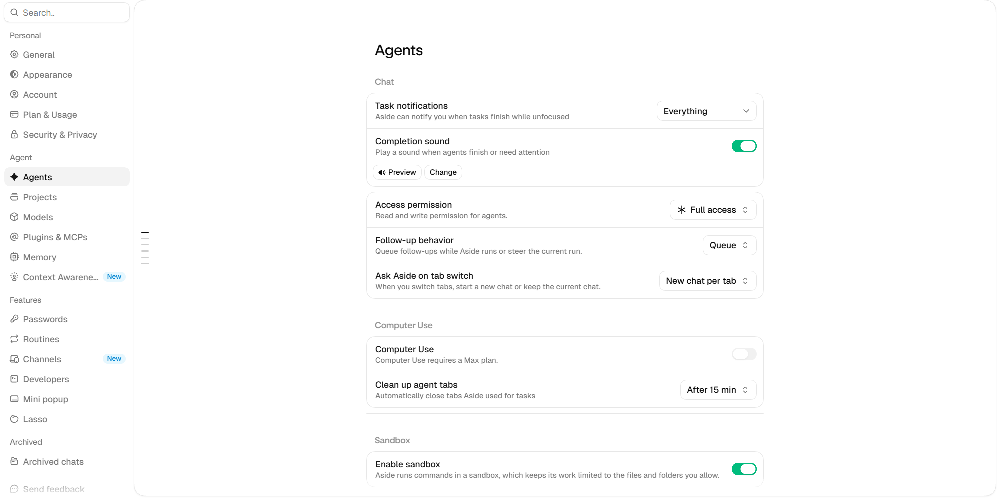
실제 Aside Settings → Agents 화면입니다. 작업 완료 알림, 접근 권한, 샌드박스, 읽기·쓰기 가능 폴더를 정할 수 있습니다.
1
어사이드는 내 컴퓨터의 브라우저와 로그인한 계정, 파일을 사용해 사용자를 대신해 일하는 AI 에이전트입니다.
2
CLI나 채팅만으로는 접근하기 힘든 웹페이지도 크롬 브라우저에서 열어, 웹 조사, 계정 서비스, 파일 제작과 업로드까지 이어서 처리합니다.
3
내 컴퓨터와 어사이드 앱이 실행 가능한 상태에서 동작합니다.
확인·주의: Agents 설정에서 접근 권한, Sandbox, 읽기·쓰기 폴더를 필요한 범위로 제한할 수 있습니다.
비서형 에이전트내 컴퓨터에서 실행권한 범위
3부. AI에이전트 활용과 전용 스킬 제작
어사이드를 내 AI 구독과 연결하기
02 / 08
설치 후 실제 Aside 설정에서 자신이 구독 중인 LLM을 연결하고 작업별 모델을 선택합니다.
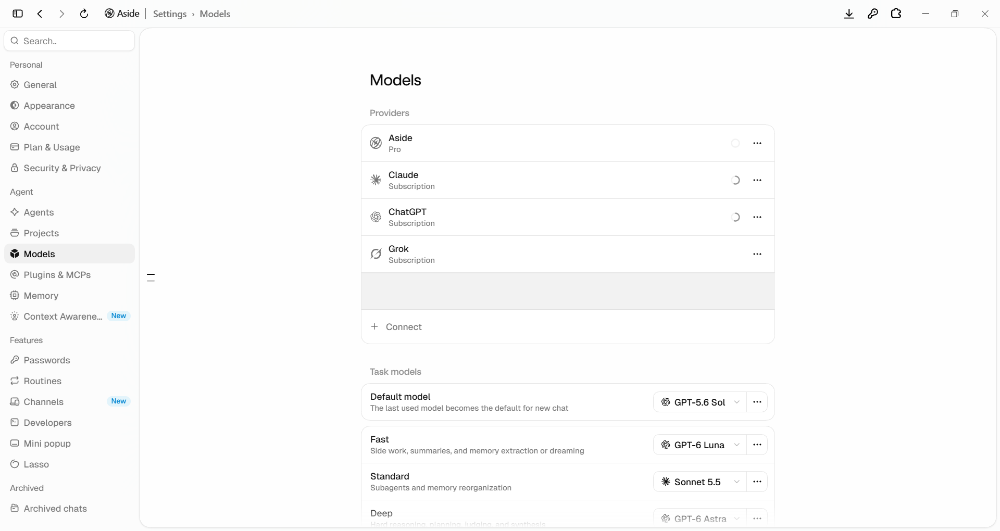
실제 Aside Settings → Models 화면입니다. 개인 API 연결 항목은 가렸습니다. Providers에서 구독 서비스를 연결하고, 아래 Task models에서 작업 유형별 모델을 선택합니다.
1
Aside 공식 다운로드 페이지에서 설치 파일을 받아 설치하고, 계정으로 로그인한 뒤 Settings를 엽니다. Aside 다운로드
2
Settings → Models → Providers에서 Connect를 선택합니다.
3
Subscription 방식으로 Claude·ChatGPT·Grok 등 자신이 이용 중인 서비스를 연결합니다.
4
연결을 마친 뒤 Task models에서 기본·빠른 작업·깊은 추론·시각 작업용 모델을 선택합니다.
확인·주의: 구독 연결과 API 키 연결은 다른 방식입니다. API를 선택하면 해당 제공자에서 사용량에 따라 별도 과금될 수 있습니다.
Aside 설치Models 설정기존 LLM 구독
3부. AI에이전트 활용과 전용 스킬 제작
단순 반복 작업, 스킬로 해결하기
03 / 08
처음 한 번은 함께 만들고, 그다음부터는 시켜 두고 제 일을 합니다.
단원마다 학습지를 만드는 일은 오래 걸리지만 방법이 정해져 있는 일입니다. 이런 일은 어사이드에게 맡기고, 저는 수업 설계나 학생 지도처럼 사람이 해야 하는 일에 시간을 쓸 수 있습니다. 다만 맡기려면 처음 한 번은 어사이드와 함께 기준을 만들어야 했습니다.
1
어떤 모양인지 먼저 보게 했습니다. 기존 학습지 5개를 열어 보게 하고 “이와 거의 동일한 양식으로 네가 만들어야 한다”고 말했습니다.
2
기존 학습지를 복사해 틀로 썼습니다. 피타고라스 정리 활동을 복사해 편집 화면을 열고, 제목은 HW-6 Ⅵ-1로 이어 가기로 했습니다.
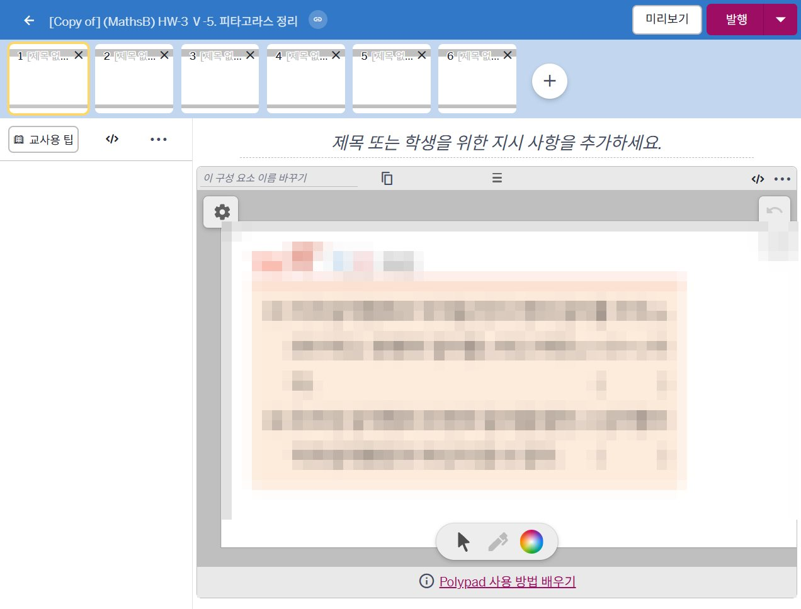
피타고라스 정리 학습지를 복사해 연 편집 화면입니다. 화면 6개가 그대로 있고, 안의 문제 이미지를 새 소단원 것으로 바꿔 갑니다. (교과서 문항은 가렸습니다.)
3
순서를 말로 적어 주었습니다. 어사이드는 제 화면을 녹화해서 따라 할 수 없어서, 제가 10단계로 순서를 적어 주고 “이 과정은 스킬로 저장할 거니까 제대로 해”라고 덧붙였습니다.
4
두 장만 시켜 보고 고쳐 주었습니다. 첫 결과는 이미지가 가운데에 있었습니다. “왼쪽 위에 붙이고 아래 1/3은 필기 공간으로 남겨 줘”, “줄 수에 따라 크기가 달라야 해”라고 기준을 정해 주었습니다.
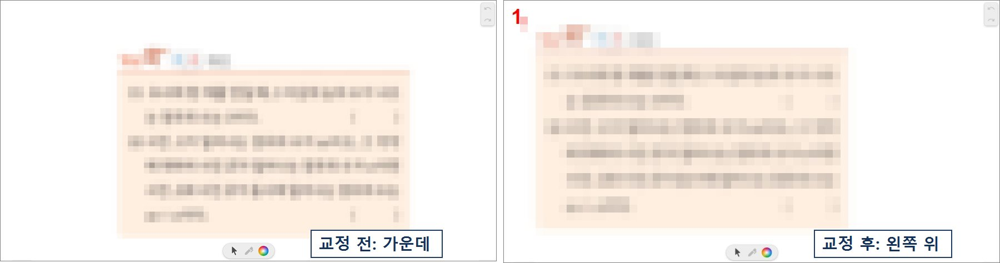
왼쪽은 어사이드의 첫 결과, 오른쪽은 제가 고쳐 준 뒤입니다. 이미지를 가운데가 아니라 왼쪽 위에 붙이고, 아래쪽은 필기 공간으로 비웠습니다. (교과서 문항은 가렸습니다.)
5
나머지와 발행까지 맡기고, 순서를 스킬로 남겼습니다. 6개 화면과 대표 이미지, 발행, 컬렉션 추가까지 끝내게 한 뒤 이 순서를 스킬 파일로 저장했습니다.
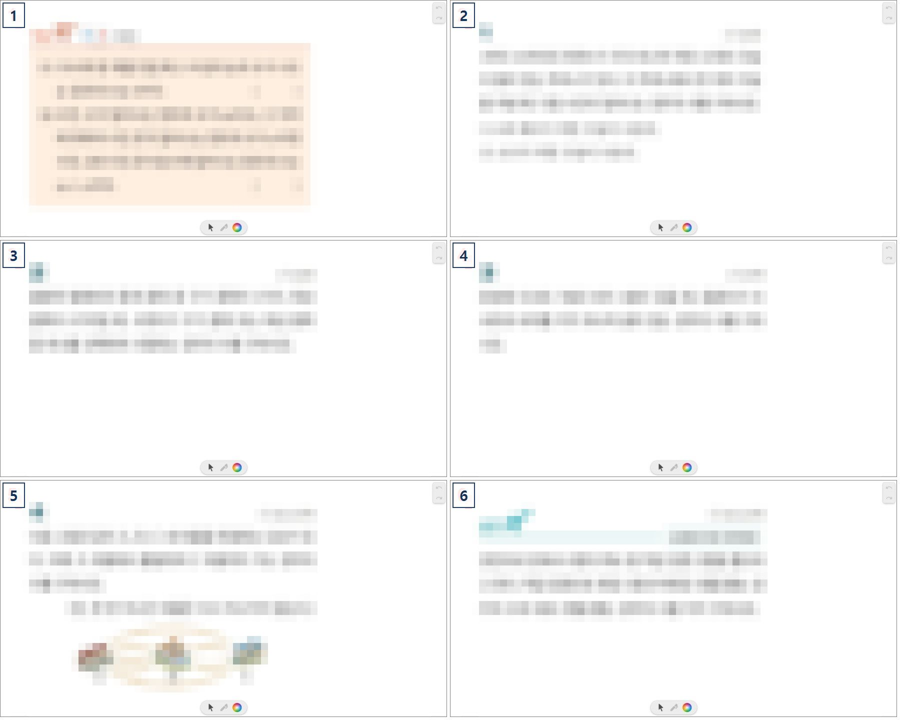
교체를 마친 6개 화면입니다. 이 순서를 그대로 스킬 파일에 적어 두었습니다. (교과서 문항은 가렸습니다.)
6
이제는 한 줄로 시켜 둡니다. “HW-7,8,9를 모두 끝내놔”와 교과서 PDF 3개만 주었습니다. 어사이드는 스킬을 먼저 읽고 학습지 3개(화면 18개)를 만들어 발행하고 컬렉션까지 추가했습니다. 그동안 저는 다른 일을 할 수 있습니다. 만들어진 순서가 스킬로 남았으니, 다음 쪽에서 그 스킬을 살펴봅니다.
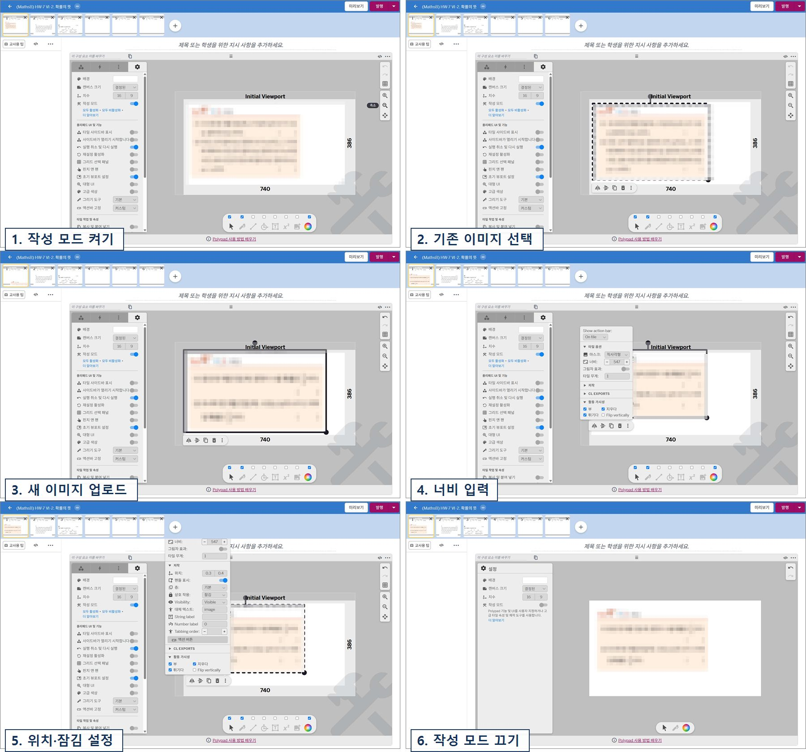
다음 소단원을 시키면 어사이드가 화면마다 이 과정을 반복합니다. 작성 모드를 켜고, 기존 이미지를 지우고, 새 이미지를 올린 뒤 너비·위치·잠김을 맞춥니다. (교과서 문항은 가렸습니다.)
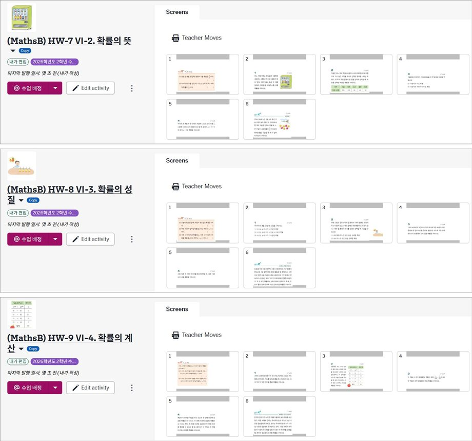
발행하고 컬렉션까지 추가된 학습지 3개입니다.
확인·주의: 결과는 말만 믿지 않고 학생 미리보기와 컬렉션에서 직접 확인했습니다. 풀이 공간이 부족하다는 판단(6번 화면)은 사람이 했고, 그 기준은 스킬에 다시 반영했습니다. 어사이드는 사용자의 컴퓨터와 앱이 실행 가능한 상태여야 작동하며, Muse·Grok Bot처럼 자체 컴퓨터에서 24시간 독립 실행하는 방식과는 다릅니다.
먼저 함께 만들기기준은 사람이 정하기이제는 한 줄로 시키기
3부. AI에이전트 활용과 전용 스킬 제작
스킬 1 · 소단원 문제 액티비티 만들기
04 / 08
완성된 스킬로 학습지를 만드는 과정을 시연합니다.
1
한 줄로 시킵니다. 교과서 PDF를 주고 만들 소단원을 한 줄로 요청합니다.
2
스킬대로 진행합니다. 어사이드가 ‘amplify-hw-worksheet’ 스킬 파일을 먼저 읽고, 직전 학습지 복사 → 제목·대표 이미지 교체 → 문항 이미지 교체 → 학생 미리보기 확인 → 발행 → 컬렉션 추가 순서로 진행합니다.
3
기준도 스킬에 들어 있습니다. 한 화면에 한 문제, 글자 크기 통일, 6줄 이상은 줄여서 풀이 공간 확보, 이미지는 왼쪽 위에 놓고 잠금 같은 판단 기준이 적혀 있습니다.
확인·주의: 시연은 연수 현장에서 진행합니다. 결과는 말만 믿지 않고 발행된 학습지와 컬렉션을 직접 열어 확인합니다. 스킬에는 학생 정보나 비밀번호를 넣지 않고, 기준을 바꾸고 싶을 때는 사람이 확인한 뒤 스킬을 고칩니다.
시연스킬 파일한 줄 지시
3부. AI에이전트 활용과 전용 스킬 제작
스킬 2 · 대화로 채점 기준 만들기
05 / 08
대화로 채점 기준을 다듬고, 승인된 규칙을 스킬로 남깁니다.
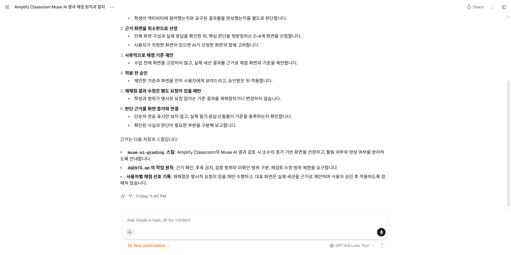
실제 Aside 채팅 화면입니다. 학생 식별정보나 개별 점수 없이, 활동·완성 여부 분리와 대표 화면 선정 원칙을 정리한 세션입니다.
1
활동 여부와 결과물 완성 여부를 서로 다른 판단으로 구분했습니다.
2
전체 화면을 일괄 확인하지 않고 판단 근거가 분명한 대표 화면 2~4개를 선정했습니다.
3
새 액티비티는 기준안을 먼저 제시하고 교사가 승인한 뒤 적용하도록 정했습니다.
4
명시적 승인 뒤 스킬 파일에 기록해 다음 채점에서 재사용합니다.
확인·주의: 실제 학생 채점 시연은 연수 현장에서 진행합니다. 이 페이지는 채점 결과가 아니라 교사와 AI가 운영 기준을 합의하는 과정을 보여 줍니다. 스킬은 학생별 결과를 저장하는 곳이 아닙니다.
실제 대화기준 합의스킬 축적
3부. AI에이전트 활용과 전용 스킬 제작
독립 스킬 · 스노클 문항과 루브릭 아키텍트
06 / 08
어디서나 실행되고 누구나 설치하는 공개 배포형 스킬 — 터미널 AI 에이전트(Claude Code, Codex, Antigravity)로 Snorkl(스노클) 수학 문항 카드와 4단계 채점 기준을 설계합니다.
💡 안내: Claude Code, OpenAI Codex, Google Antigravity 등 터미널(CLI) 기반 AI 에이전트 사용자를 위한 공개 배포형 전문 저작 스킬입니다. 특정 앱에 종속되지 않고 시스템 전역에서 동작합니다.
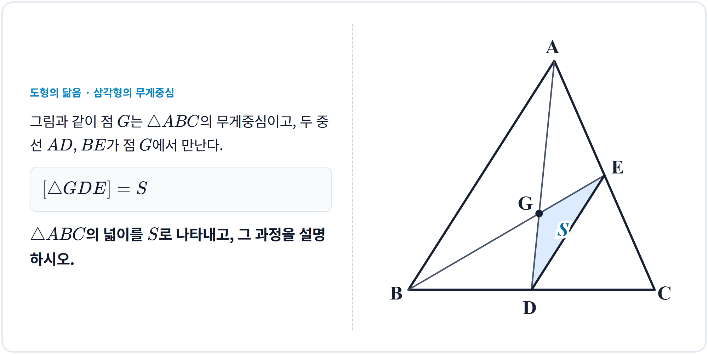
스킬이 자동 렌더링한 실제 스노클 문항 카드(2000×1000)입니다. 문제 지문과 함께 기하 벡터 도형(무게중심 및 음영 안착)과 학생 풀이 여백이 분할되어 있습니다.
스노클 루브릭 아키텍트 (snorkl-rubric-architect)
스노클(Snorkl)은 학생이 태블릿에 풀이를 음성으로 설명하며 적으면 AI가 피드백을 주는 도구입니다. 이 스킬은 교사가 직접 만들기 번거로운 고화질 문항 카드 제작과 AI 채점용 4단계 루브릭 작성을 CLI 에이전트와 대화하며 완성합니다.
1
2000×1000 문항 카드 자동 생성: 문제 지문과 조건을 입력하면 기하 벡터 그래픽과 수식을 조판해 스노클에 바로 올릴 수 있는 고화질 이미지를 즉시 생성합니다.
2
스노클 전용 「정답/평가 기준」 작성: 스노클 AI 채점 칸에 붙여넣을 수 있도록 수식 기호 깨짐 없는 텍스트로 모범 풀이, 4단계 배점표(0.5점 부분점수), 대체 인정 기준을 만듭니다.
3
교사 확인 기반 단계별 진행: AI가 결과를 한 번에 쏟아내지 않고, 문항 분석 → 문제 화면 검토 → 평가 기준표 검토 순서로 교사의 확인을 거치며 진행합니다.
참고: 설치 스크립트는 PC에 설치된 Claude Code, Codex, Antigravity 폴더를 자동 감지해 스킬을 연동합니다. 설치 후 새 터미널 세션에서 바로 사용할 수 있습니다.
확인·주의: 스노클 웹 화면의 루브릭 칸에는 수식 기호가 깨지지 않도록 에이전트가 출력한 순수 텍스트(Plain Text) 버전의 「정답/평가 기준」을 복사해 넣습니다.
독립 스킬공개 배포Claude CodeCodexAntigravity스노클 문항 카드4단계 루브릭
3부. AI에이전트 활용과 전용 스킬 제작
비서형 에이전트의 등장 - Muse AI
07 / 08
PC 웹브라우저에서 Muse에 가입하고 접속하는 방법을 안내합니다.
이용 전 확인하세요
연수 안내 기준에서는 아직 한국 정식 서비스 개시 전의 VPN 우회 접속 방법을 다룹니다. VPN 우회는 서비스 정책이나 지역 제한에 따라 이용 제한 또는 계정 정지로 이어질 가능성이 있으므로 본인이 위험을 판단해야 합니다. 중요한 메인 계정보다는 별도의 서브 계정 사용을 권합니다.
주의: VPN 연결과 새로고침은 가입 절차를 이어주는 우회 접속 방법입니다. 막히는 것은 회원가입 단계뿐이므로, 가입을 마친 뒤에는 VPN 연결을 해지해도 VPN 없이 접속할 수 있습니다.
Muse 웹의 로그인·회원가입 첫 화면입니다. 휴대폰 번호 또는 이메일을 입력하고 Continue를 누릅니다. 대기열 등록과 VPN 연결 후 새로고침하면 이 화면 흐름으로 가입을 진행합니다. (제3자 공개 자료의 화면이며, 실제 화면은 접속 시점에 달라질 수 있습니다.)
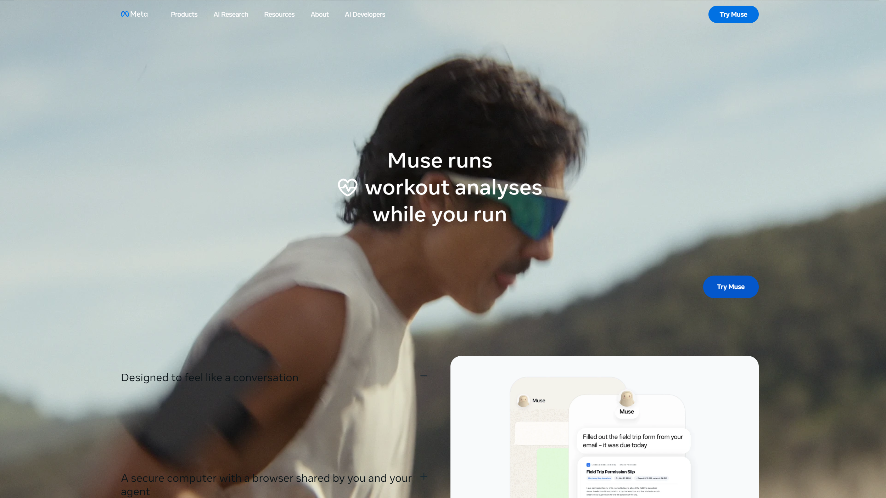
Meta의 Muse 공식 소개 화면입니다. PC에서는 muse.ai 웹 접속을 기본 경로로 사용합니다. 원본 페이지 열기
VPN을 연결한 뒤 새로고침하면 가입 절차가 진행됩니다. 가입 뒤 연결 서비스와 승인 범위를 검토하고 작은 작업부터 시험합니다.
PC 웹 접속VPN 연결VPN 위험 고지
3부. AI에이전트 활용과 전용 스킬 제작
다양한 비서형 에이전트 소개
08 / 08
이 서비스들은 질문에 답하는 챗봇을 넘어, 원격의 자체 컴퓨터와 브라우저를 구동해 사용자를 대신해 행동합니다.
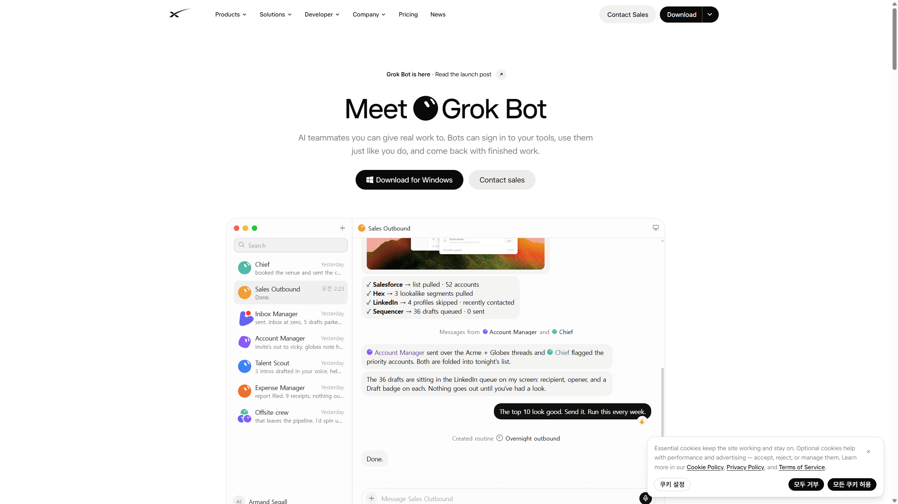
Grok Bot은 원격의 자체 컴퓨터에서 앱과 웹사이트를 사용하고 Routine을 실행하는 비서형 에이전트의 선구적인 서비스입니다. 사용자의 PC가 꺼져 있어도 원격 환경에서 작업을 이어갈 수 있다는 점이 핵심입니다. 원본 페이지 열기피클AI는 자체 브라우저와 컴퓨터로 웹사이트를 사람처럼 조작하고, 온라인으로 해결할 수 없는 일은 직접 전화하는 생활형 개인 AI 에이전트입니다. 예약·주문·신청·구독 취소·고객센터 문의 등을 맡길 수 있으며, 결제와 예약처럼 되돌리기 어려운 작업은 사용자의 승인 뒤 진행합니다. 피클 초대 링크:https://pickle.com/i/Z5YLYSFZ(개인 초대 링크)
1
Grok Bot·Muse·피클 같은 원격 PC형 에이전트는 서비스 측 컴퓨터와 브라우저에서 작업하므로 사용자의 PC가 꺼져 있어도 일을 이어갈 수 있습니다.
2
피클AI는 웹 작업뿐 아니라 전화로 예약·문의·환불 요청을 대신하고, 진행 과정과 결과를 사용자에게 보여 줍니다.
3
이 밖에도 닷츠, 출시 예정인 Claude Duet 같은 개인 AI 에이전트가 있습니다.
Grok Bot피클AI닷츠·Claude Duet
4부 · 바이브코딩 활동
ai-labs 활동 허브
01 / 02
바이브코딩으로 만든 수학 게임·탐구활동을 한곳에 모은 허브입니다. 선생님용 통합 입구로, 카드를 누르면 각 활동의 독립 페이지로 이동합니다.
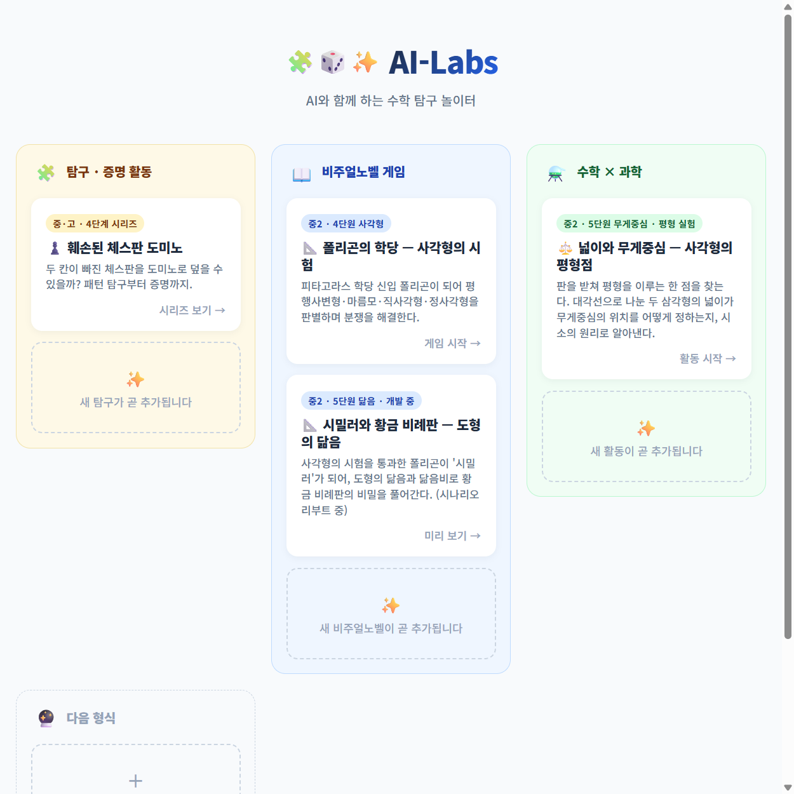
허브는 서울사대부중 2학년 수학 게임·탐구활동의 단일 카탈로그입니다. 카드를 누르면 각 활동의 독립 페이지로 이동합니다. 원본 페이지 열기
1
활동은 각자 독립 레포로 만듭니다. 허브 안에 게임 파일을 넣지 않습니다.
2
허브 카드는 games.json에서 자동 생성됩니다. 카드 HTML을 직접 쓰지 않습니다.
3
새 활동 추가는 games.json에 항목 1개만 추가하면 됩니다. 템플릿으로 만든 활동 레포를 연결합니다.
바이브코딩허브복제
4부 · 바이브코딩 활동
활동 3개 살펴보기
02 / 02
각 활동이 어떤 구조로 되어 있고 무슨 내용을 다루는지 살펴봅니다. 카드를 누르면 바로 실행할 수 있습니다.
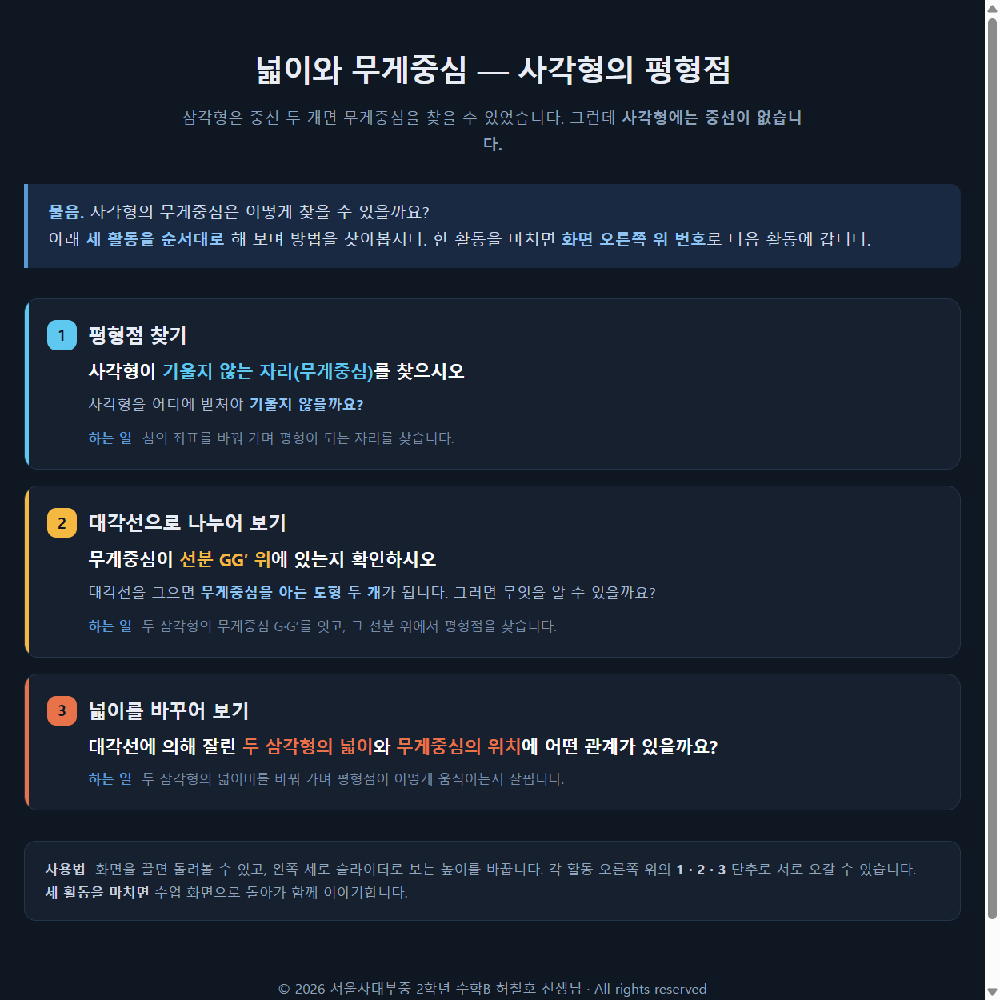
사각형 무게중심 활동의 시작 화면입니다. 평형점 찾기, 대각선으로 나누어 보기, 넓이를 바꾸어 보기 3개 탐구로 이루어져 있습니다. 원본 페이지 열기
1
훼손된 체스판 도미노 — 탐구·증명, 중·고 4단계 시리즈. 두 칸이 빠진 체스판을 도미노로 덮을 수 있는지 탐구하고 증명합니다. 1단계 8×8 도전 — 직접 도미노를 놓으며 언제 가능·불가능한지 탐구합니다. 대각선 제거, 한 줄 끝 제거, 내가 선택하는 3가지 방식으로 제거해 봅니다. 2단계 패턴 찾기 — 6×6과 4×4 작은 판에서 같은 색 두 칸 제거와 다른 색 두 칸 제거를 비교 실험합니다. 같은 색이면 불가능, 다른 색이면 가능하다는 패턴을 발견합니다. 3단계 경로 탐험 — 4×4판에서 모든 칸을 한 번씩 지나 돌아오는 경로를 직접 만들고 번호를 매긴 뒤 타원 고리로 펼쳐, 색이 번갈아 나타나는 규칙을 발견합니다. 고리에서 두 칸을 빼보는 실험으로 같은 색과 다른 색의 차이를 확인합니다. 4단계 증명 풀이 — 순환 경로와 색 번갈음을 이용한 완성된 증명을 확인합니다. 다른 색을 제거하면 고리가 두 조각으로 끊어져도 두 조각 모두 짝수 칸이라 도미노로 덮이고, 같은 색을 제거하면 두 조각 모두 홀수 칸이라 덮을 수 없습니다. 활동 열기
2
폴리곤의 학당 — 사각형의 시험 — 비주얼노벨, 중2 4단원 사각형. 피타고라스 학당의 신입 폴리곤이 되어 평행사변형·마름모·직사각형·정사각형을 판별하며 분쟁을 해결합니다. 구조는 정규 문제 12개(메인 10 + 사이드 2)에 특별 문제 1개가 더해진 형태입니다. 각 문제는 첫 시도 정답에만 점수를 주고, 오답이면 힌트가 단계별로 노출되며 3회 실패하면 정답이 공개됩니다. 특별 문제는 점수와 무관하지만 통과해야만 다음으로 넘어갈 수 있습니다. 엔딩은 첫 시도 정답 개수에 따라 3가지로 갈립니다. 게임이 끝나면 “풀이 제출하기(PDF)”로 본인용 풀이지를 내려받아 오답 문제를 인쇄 후 손으로 다시 풀 수 있고, 진행 상태가 저장되어 이어서 하기도 됩니다. 크롬북에서 브라우저만으로 실행됩니다. 활동 열기
3
넓이와 무게중심 — 사각형의 평형점 — 수학×과학, 중2 5단원 삼각형의 무게중심 2차시. 삼각형은 중선 두 개면 무게중심을 찾는데 사각형에는 중선이 없습니다. 사각형의 무게중심을 어떻게 찾을지, 세 활동을 순서대로 하며 스스로 발견합니다. 1 평형점 찾기 — 사각형이 기울지 않는 자리(무게중심)를 찾습니다. 침의 좌표를 바꿔 가며 평형이 되는 자리를 찾습니다. 2 대각선으로 나누어 보기 — 대각선을 그으면 무게중심을 아는 삼각형 두 개가 됩니다. 두 삼각형의 무게중심 G·G′를 잇고, 그 선분 위에서 평형점을 찾습니다. 3 넓이를 바꾸어 보기 — 대각선에 의해 잘린 두 삼각형의 넓이비를 바꿔 가며 평형점이 어떻게 움직이는지 살핍니다. 넓이비를 뒤집어 내분한다는 규칙을 발견하고, 시소 모형으로 이유를 납득한 뒤 반대쪽 대각선으로 한 번 더 하면 두 선분의 교점으로 넓이를 몰라도 찾을 수 있습니다. 3D 화면은 끌면 돌려볼 수 있고 왼쪽 세로 슬라이더로 보는 높이를 바꿉니다. 활동 열기
게임탐구비주얼노벨
5부. 수학수업 워크스페이스 소개
수학수업 워크스페이스
01 / 03
모둠 추첨·수업 관찰 기록·시드 보기를 한곳에서 쓰는 교사 전용 워크스페이스입니다. 명렬과 좌석의 원본은 시트에 있고, 앱은 본인 계정에서만 열립니다.
모둠 추첨 화면입니다. 반을 고르고 추첨을 시작하면 6모둠 좌석표가 나옵니다. 화면 속 학생 이름은 가렸습니다.
1
시트1이 원본입니다. 명렬표와 전체기록(좌석 배치 원본)이 시트1에 있고, 기록 앱과 시드 앱은 시트1을 읽기만 합니다.
2
모둠 추첨은 성적 균등 6모둠 편성이지만, 학생 화면에는 무작위처럼 보입니다.
3
쓰는 때가 다릅니다. 모둠 추첨은 학기 초와 가끔, 수업 관찰 기록과 시드 보기는 매 수업에 씁니다.
수업 운영시트모둠
5부. 수학수업 워크스페이스 소개
수업 관찰 기록
02 / 03
최신 좌석표를 보며 학생을 눌러 관찰을 기록합니다. 매 수업에 씁니다.
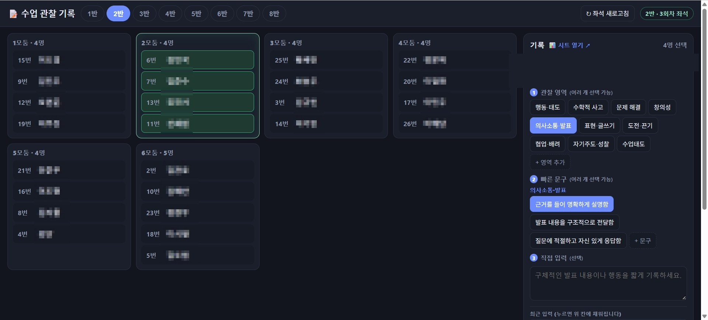
수업 관찰 기록 화면입니다. 학생을 고르면 오른쪽 기록판에서 관찰 영역·빠른 문구·직접 입력으로 기록합니다. 화면 속 학생 이름은 가렸습니다.
1
반과 모둠을 고르고 학생을 선택합니다. 선택한 학생은 오른쪽 기록판에 올라갑니다.
2
관찰 영역·빠른 문구·직접 입력으로 기록합니다. 기록은 시트2에 쌓입니다.
3
명렬은 시트1에서 읽기만 가져옵니다. 관찰영역과 문구템플릿은 시트에서 직접 편집할 수 있습니다.